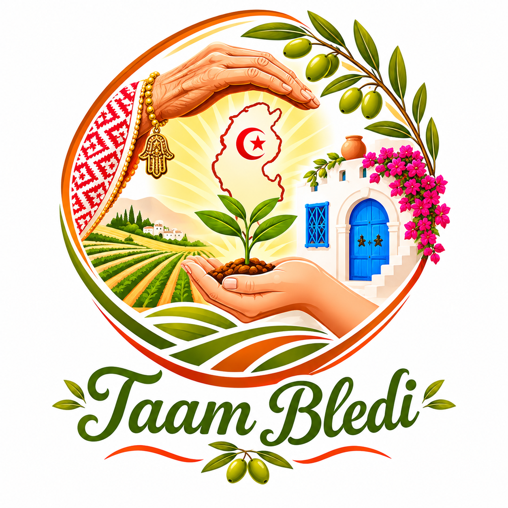

Cette page n'est pas encore disponible sans Internet. Vous pouvez quand même enregistrer une récolte : elle sera envoyée automatiquement au retour de la connexion.
أنت غير متصل بالإنترنت. يمكنك تسجيل محصول وسيُرسل تلقائياً عند عودة الاتصال.
Ajouter une récolte Réessayer